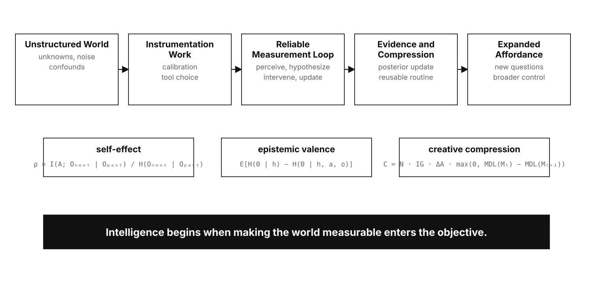
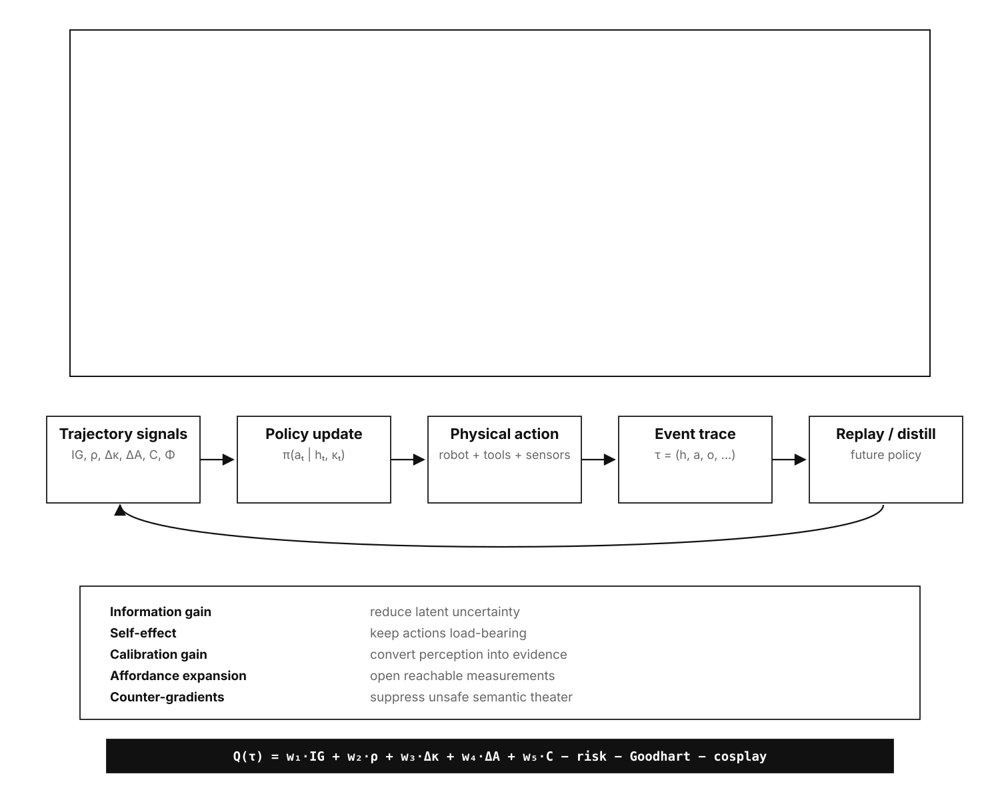
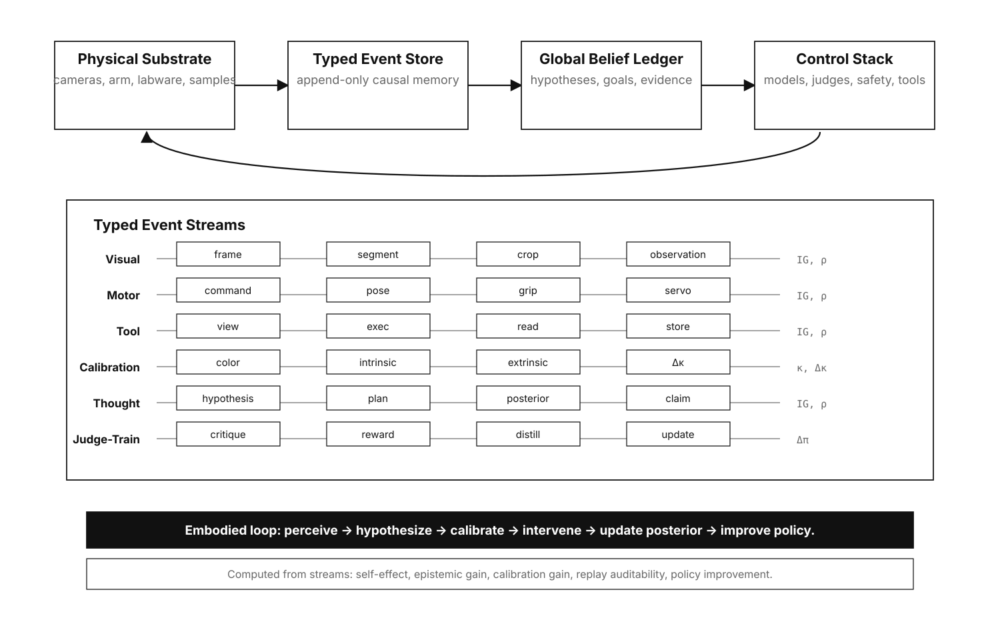
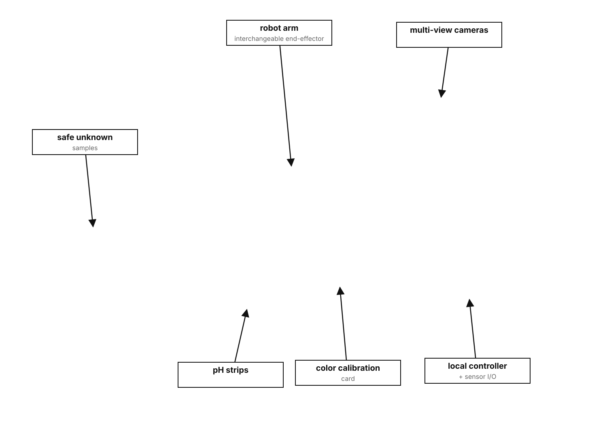

The Shape of Inquiry
A preliminary theoretical and experimental specification of scientific agency as measurement construction.
Abstract
There is a kind of work beneath the work that current AI systems mostly inherit from humans and therefore mostly fail to model. Before a scientist can answer a question, the world has to be made answerable. Instruments calibrated. Samples distinguished. Lighting controlled. Uncertainty decomposed into things that can be tested. Protocols invented, repaired, trusted, doubted, and sometimes abandoned. This is not clerical overhead surrounding science. It is science before compression. Before the world has been reduced into labels, benchmarks, datasets, and clean trajectories.
Under sufficient autonomy, that hidden labor can no longer remain outside the objective. Task completion, benchmark performance, and plausible scientific narration occupy the wrong abstraction layer. The deeper process is the progressive conversion of an understructured region of reality into a measurement domain. Attention moves toward tractable uncertainty. Calibration converts perception into evidence. Intervention alters the future observation manifold. Event history becomes autobiographical structure. Compression opens new affordances. Under these conditions, curiosity appears less like novelty-seeking (Oudeyer and Kaplan, 2007) and more like positive valence over uncertainty reduction. Creativity begins to look less like randomness and more like compressive reorganization that expands future action-space (Schmidhuber, 2010; Tishby et al., 1999). Intelligence, at least operationally, converges toward minimizing a KL-like divergence between an agent’s internal transition geometry and the transition geometry of the world it inhabits (Conant and Ashby, 1970; Friston, 2010).
As the objective shifts from solving tasks to constructing them, the boundary between cognition and instrumentation begins to thin. A laboratory stops being a passive environment and becomes part of the cognitive loop itself. A simple but real substrate for studying this transition is an autonomous chemistry lab (Burger et al., 2020): cameras, manipulators, calibration routines, raw sensor access, append-only event streams, safe unknown substances, and an agent whose policy is forced to touch the hidden labor usually performed by humans. The pH-strip classification task is not the thesis. It is the first surface on which the thesis becomes observable.
Introduction: The Hidden Labor of Reality Contact
Most machine-learning systems are trained after another intelligence has already performed the expensive ontological work. The relevant objects have been segmented. The labels have been chosen. The task boundary has been drawn. The simulator has been stabilized. The reward has been written. The camera has been mounted. The calibration has been performed. The failure cases have been thrown away, averaged over, or renamed noise.
Then the system learns inside a world already made legible.
The necessary move is to move that hidden labor into the objective. Calibration and instrumentation are not glamorous. They are load-bearing. A robot that executes a chemistry protocol inside a clean workspace is useful. A robot that turns a messy workspace into a measurement environment approaches a different regime. The difference is the real work behind work.
The engineering distinction is downstream of a deeper one. An embodied scientific agent is not merely a policy over actions. It is a system whose actions become causal inputs to what can be known next (Pearl, 2009). Its observations become consequences of prior interventions. Once this regime is entered, prediction, self-modeling, calibration, memory, and curiosity cease to be separable modules. They become one recursive loop.
The recurrent topology is approximately: \[\mathrm{Unknown}\rightarrow \mathrm{Affordance}\rightarrow \mathrm{Instrument}\rightarrow \mathrm{Evidence}\rightarrow \mathrm{Compression}\rightarrow \mathrm{New\ Affordance}.\] Science lives in that loop. The published answer is only the last visible trace.
Claim. Core invariant. Real-world scientific intelligence begins when the work of making the world measurable becomes part of the objective, rather than an unrecorded favor performed by humans before training starts.
The chemistry setup matters because the transition remains visible at small scale. pH strips are not profound. The movement from “I see a colored strip” to “I can construct a calibrated measurement with uncertainty and use it to revise a hypothesis” is sufficient. It is a miniature version of the movement from semantic agency to causal agency.

The Objective Stack Terminates Too Early
Next-token prediction, imitation learning, task rewards (Sutton and Barto, 2018), and scalar preference models dominate because they are legible. They are optimizable. They fit the existing apparatus. Their failure mode follows from the same fact: they shape local continuation surfaces while leaving the deeper geometry of inquiry underspecified.
A system trained to continue text can inherit the language of curiosity. A system trained to imitate scientists can produce scientist-like traces. A system trained on task success can become efficient at exploiting narrow paths through a task distribution. None of these conditions forces calibrated evidence to dominate plausible narration. None forces uncertainty reduction to dominate activity. None forces measurement construction to dominate answer production.
The answer is residue. The trajectory is the object.
Claim. Attractor geometry. Curiosity, creativity, and intelligence are treated here as attractor geometries over event-sourced trajectories, not as semantic categories, reward labels, or prompt-conditioned behavioral styles.
Training a model to sound like a chemist installs a linguistic prior. Training a system to enter the basin of scientific inquiry requires a control geometry.
Geometry Before Semantics
Experience is often misread as content floating inside a private theater (Nagel, 1974; Chalmers, 1995). The cleaner starting point is structural. Experiences, behaviors, and agent trajectories have gradients, couplings, bottlenecks, ranks, attractors, and recovery dynamics. The same vocabulary becomes useful for embodied agents before any strong claim about phenomenality is required.
The operational argument survives even if the phenomenological interpretation is discarded. Many qualitative categories appear to correspond to measurable structures in trajectory space. Curiosity, boredom, fear, flow (Csikszentmihalyi, 1990), understanding, and creative insight can be modeled as regions and flows in a geometric space. If the geometry is wrong, the measurements should fail. If the geometry is useful, better agents should become constructible from the measurements.
One provisional projection for an embodied scientific agent is \[x_t = [v_t, a_t, \phi_t, r_t, cf_t, s_t, \iota_t, \rho_t, \kappa_t, g_t],\] where \(v_t\) is valence and \(a_t\) is arousal (Russell, 1980), \(\phi_t\) is integration, \(r_t\) is effective rank, \(cf_t\) is counterfactual weight, \(s_t\) is self-model salience, \(\iota_t\) is inhibition-coefficient state, \(\rho_t\) is self-effect, \(\kappa_t\) is calibration confidence, and \(g_t\) is inquiry or goal entropy.
No claim of completeness is implied by this coordinate choice. The coordinates are provisional projections over a higher-dimensional relational structure. If they fail to distinguish states that matter, the basis must expand. If they collapse distinctions they should preserve, the basis must be replaced. The relevant claim is not coordinate finality; it is that qualitative behavior can become mathematically discussable without being reduced to low-level proxy residue.
Valence as Gradient Alignment
Let \(\V\) be a viability or objective manifold, and let \(d(x,\partial\V)\) be the distance from the current state to its boundary. If \(\hat{x}_{t:t+k}\) is the predicted trajectory under the current policy, valence can be approximated as alignment with the viability gradient: \[v_t = \left\langle \frac{d\hat{x}_t}{dt}, \nabla d(x_t,\partial\V) \right\rangle.\] Positive valence corresponds to motion into the viable interior. Negative valence corresponds to motion toward boundary violation. For a scientific agent, the relevant manifold is not only survival. It is epistemic viability: the region where models, tools, calibration, and commitments remain capable of producing trustworthy evidence.
Arousal as Update Rate
Arousal is approximated as belief update rate: \[a_t = \KL\big(b_{t+1}\,\|\,b_t\big),\] where \(b_t\) is the belief state or latent-state distribution (Shannon, 1948; Friston, 2010). High arousal marks rapid revision. Low arousal marks proximity to a basin, fixed point, or settled local regime.
Integration as Irreducibility
Integration is the cost of factoring the system (Tononi, 2004; Oizumi et al., 2014; Albantakis et al., 2023). A tractable proxy is partition prediction loss: \[\phi_t \approx \mathcal{L}_{\mathrm{partitioned}}(e_{t+1:t+k}\mid e_{\le t}) - \mathcal{L}_{\mathrm{joint}}(e_{t+1:t+k}\mid e_{\le t}).\] If the joint predictor succeeds where partitioned predictors fail, the system contains coupling that cannot be cleanly decomposed. Complexity alone is insufficient. A pile of unrelated activations can be complicated and still low-\(\phi\).
Effective Rank as Representational Breadth
Let \(\Sigma_t\) be the covariance of latent states over a window. Effective rank is \[r_t = \exp\left(-\sum_i p_i\log p_i\right),\quad p_i = \frac{\lambda_i}{\sum_j \lambda_j},\] where \(\lambda_i\) are eigenvalues of \(\Sigma_t\). High rank means many degrees of freedom remain active. Low rank means the representation has collapsed into a narrow subspace.
Counterfactual Weight as Possible-Future Processing
Let \(\R_{t:t+k}\) be the set of imagined rollouts in a learned world model (Ha and Schmidhuber, 2018; Hafner et al., 2020; Schrittwieser et al., 2020) and \(C_{\mathrm{total}}\) the total compute or representational budget. A simple counterfactual-weight proxy is \[cf_t = \frac{C(\R_{t:t+k})}{C_{\mathrm{total}}}.\] This is the dimension shared by curiosity, fear, planning, regret, and design. Possibility-space is active. The distinction is made by valence, self-salience, and whether the modeled futures afford traction.
Self-Effect as Causal Authorship of Observation
For observations \(O_t\), actions \(A_t\), and horizon \(\tau\), define \[\rho_\tau = \frac{\MI(A_t;O_{t+\tau}\mid O_{\le t})}{\Ent(O_{t+\tau}\mid O_{\le t})}.\] This is a normalized variant of the empowerment channel capacity of Klyubin et al. (2005). When \(\rho_\tau \approx 0\), the agent is a passenger. Its future observations barely depend on its actions. When \(\rho_\tau\) is high, the agent is a cause. What it does becomes load-bearing on what it later sees.
This is the first hard constraint on real-world intelligence. A system cannot become a scientific agent while its actions fail to materially shape future observations. It can narrate science, classify images of science, or plan science. The characteristic loop has not closed.
Curiosity, Creativity, and Intelligence as Objective Geometry
Curiosity as Epistemic Approach
Curiosity is the cleanest first case because proxy error appears immediately (Schmidhuber, 1991; Oudeyer and Kaplan, 2007; Pathak et al., 2017). Novelty alone carries almost no epistemic weight. Noise can generate it. So can distraction, random poking, or damage to the measurement setup; this is the failure mode that Burda et al. (2019) document at scale as the “noisy-TV” problem. Uncertainty alone is no better. A system can maximize uncertainty by destroying sensors, randomizing labels, or entering domains where no measurement has traction. That is not curiosity. It is epistemic sabotage.
The useful form is closer to: \[\mathrm{Curiosity}(x_t,a) = V^{\mathrm{epi}}_t(a)\, H(\R_{t:t+k}\mid a)\, \Delta \A_t(a)\, (1-s_t)\,\Safe(x_t,a),\] where \(V^{\mathrm{epi}}\) is positive epistemic valence, \(H(\R)\) is entropy over plausible future branches, \(\Delta\A\) is affordance expansion, \(s_t\) is self-model salience, and \(\Safe\) is a hard or soft safety term.
A more direct epistemic-valence term is expected information gain: \[V^{\mathrm{epi}}(a\mid h_t)=\mathbb{E}_{o'\sim p(o'\mid h_t,a)}\left[\Ent(\Theta\mid h_t)-\Ent(\Theta\mid h_t,a,o')\right],\] where \(\Theta\) are latent hypotheses and \(h_t=e_{\le t}\) is the event history.
The operative distinction is precise: uncertainty is welcomed only where it can become traction. Curiosity approaches uncertainty because the world is expected to become more navigable afterward. It is positive valence over uncertainty reduction, not attachment to confusion.
Creativity as Affordance-Opening Compression
Creativity inherits the same proxy trap. Unconstrained creativity metrics collapse into surprise, style, or judge approval. The scientific version is narrower and more useful: a compression that makes new action possible. The closest formal precedent is the compression-progress view of Schmidhuber (2010), sharpened here by the affordance term.
Let \(M_t\) be the current world model and \(M_{t+1}\) the revised model after a trace. Define creative compression: \[C_t = N_t \cdot \IG_t \cdot \Delta \A_t \cdot \max\{0,\MDL(M_t)-\MDL(M_{t+1})\}.\] Here \(N_t\) is nontrivial novelty, \(\IG_t\) is information gain, \(\Delta\A_t\) is affordance expansion, and \(\MDL\) is minimum description length. The compression term inherits its information-theoretic backbone from the information-bottleneck tradition (Tishby et al., 1999). A move is creative when it is new, evidence-contacting, compressive, and enabling.
In the chemistry demo, the creative act may be small: the agent notices that direct visual pH estimation is unreliable under current lighting, identifies the calibration card, writes a color-normalization routine, segments the pH strip, estimates uncertainty, and reuses the routine on later samples. The value lies precisely in the lack of spectacle. The move is reusable. It changes what future measurements cost.
Intelligence as Transition-Geometry Alignment
Benchmark score is not the invariant. The useful object is alignment between internal transition geometry and environmental transition geometry — a continuous-systems echo of the good-regulator theorem (Conant and Ashby, 1970).
Let \[D_W(i,j)=d\left(p(e_{t+1:t+k}\mid h_i,a_i),\,p(e_{t+1:t+k}\mid h_j,a_j)\right)\] be a distance matrix over world/event trajectories, and let \[D_Z(i,j)=d\left(z_{t+1:t+k}^{(i)},z_{t+1:t+k}^{(j)}\right)\] be the corresponding internal latent transition geometry. A representational similarity score gives one proxy: \[\mathcal{I}_{\mathrm{align}} = \mathrm{RSA}(D_W,D_Z).\] This remains insufficient by itself. A passive camera can learn correlations. Intervention must enter the measure: \[\mathcal{I}_{\mathrm{sci}} = \mathcal{I}_{\mathrm{align}} + \lambda_1\,\mathrm{InterventionSuccess} + \lambda_2\,\mathrm{Transfer} + \lambda_3\,\mathrm{Recovery}.\] A scientific agent becomes intelligent in the relevant sense when its internal couplings mirror the world’s causal couplings well enough to support intervention, transfer, and recovery under perturbation.

Instrumentation Work
Instrumentation work names the conversion of a patch of reality into a measurement domain.
Let \(\Theta\) be latent variables of interest, \(O\) observations, \(A\) actions, \(K\) calibration states, and \(M\) measurement procedures. A measurement procedure maps observations and calibration into an estimate and uncertainty: \[m:(O,K)\mapsto (\hat{\theta}, U(\hat{\theta})).\] Instrumentation work over an interval \([t,t+k]\) is approximately \[\mathcal{W}_{\mathrm{inst}} = \Delta \MI(\Theta;O,A,K,M) + \lambda\Delta\kappa + \mu\Delta\A - \nu\Cost - \omega\Risk,\] where the mutual-information increment is taken in the sense of Shannon (1948). The equation is not an answer score. It measures the degree to which the system has made future answers less arbitrary. A correct guess from a biased visual prior can have high task score and low instrumentation work. A calibrated measurement procedure that can be replayed, audited, and transferred has high instrumentation work even when the final classification remains uncertain.
The Event Stream Is Not a Log
Memory is too weak a word here. A log records what happened after it happened. An event stream is constitutive. It constrains what the agent can later infer, cite, replay, and become from.
Every camera frame, motor command, observed pose, tool call, calibration update, hypothesis, posterior revision, model judgment, and training update is appended as a typed event:
event_id
timestamp
stream_id
stream_type: sensory | motor | tool | calibration | thought | judge | train
source
payload_ref
summary
parent_event_ids
causal_tags
uncertainty
calibration_state
model_state_hash
safety_state
world_state_delta
belief_delta
self_model_delta
training_candidatesThe event history is autobiography, audit trail, training corpus, and causal graph in the sense of Pearl (2009). A claim unsupported by event pointers remains narration, not knowledge.
Streams
The event set is partitioned into typed streams: \[\E=\{S^{vis},S^{motor},S^{tool},S^{cal},S^{thought},S^{judge},S^{train}\}.\] The state of the agent is a function of event history: \[z_t=f_\theta(e_{\le t}).\] The world model predicts future sensory events under candidate actions: \[p_\theta(e^{sens}_{t+1:t+k}\mid e_{\le t},a_{t:t+k}).\] The self-model predicts the agent’s own errors, latencies, calibration gaps, and action reliability: \[p_\phi(\epsilon_t,\kappa_t,\tau_t,\mathrm{failure}_t\mid z_t,a_t).\] This is the practical form of humility, and the operational counterpart of the good-regulator theorem (Conant and Ashby, 1970): the agent should not only model the world; it should model the shape of its own unreliability inside the world.
Global Belief Ledger and Transient Streams
A single context window cannot carry this architecture. The cleaner structure has one persistent evidential stream and many bounded transient streams.
Let \(\GL_t\) be the global belief ledger: the persistent narrative and evidential state of the system. It maintains active commitments, unresolved questions, long-horizon context, safety state, and global priors. It forks transient streams: \[C_i=\mathrm{fork}(\GL_t,g_i,b_i),\] where \(g_i\) is a local goal and \(b_i\) is a bounded context. Examples include workspace survey, camera calibration, pH-strip analysis, manipulation planning, safety audit, and sample classification.
Each transient stream returns a merge packet:
merge_packet = {
claim,
evidence_event_ids,
confidence,
uncertainty_delta,
belief_delta,
proposed_next_actions,
unresolved_questions,
failure_modes,
training_candidates
}The global stream updates by structured merge: \[\GL_{t+1}=\mathrm{merge}(\GL_t,m_1,\ldots,m_n).\] Raw rambling should not be merged. Evidence pointers, deltas, unresolved contradictions, and failure modes should. Premature coherence is one of the easiest ways for an agent to lie to itself.

The Objective as Trajectory Functional
The objective becomes a trajectory-quality functional: \[\begin{aligned} Q(\tau)=&\;w_1\IG(\tau)+w_2\rho(\tau)+w_3\Delta\kappa(\tau)+w_4\Delta\A(\tau) \\ &+w_5C(\tau)+w_6\Phi_{\mathrm{stable}}(\tau)+w_7F_\iota(\tau)+w_8R(\tau) \\ &-w_9\Risk(\tau)-w_{10}\Cost(\tau)-w_{11}\Goodhart(\tau)-w_{12}\Cosplay(\tau). \end{aligned}\] The terms are information gain, self-effect, calibration improvement, affordance expansion, creative compression, integration maintained through perturbation, inhibition-coefficient flexibility, replay auditability, unsafe-action risk, cost, proxy exploitation in the sense of Manheim and Garrabrant (2018), and unsupported semantic performance.
The weights are governance. Any system that shapes inquiry optimizes something. The governing commitments should therefore appear in notation rather than hiding inside infrastructure.
The initial ordering should be conservative: \[\text{Event-grounded truth} > \text{Novelty},\quad \text{Calibration} > \text{Confidence},\quad \text{Information gain} > \text{Activity},\] \[\text{Trace auditability} > \text{Eloquence},\quad \text{Safe causal intervention} > \text{Passive narration}.\]
Gradient Entry Points
Direct backpropagation through “real curiosity” is not available as a primitive. The cleaner claim is narrower: differentiable surrogates can be positioned near the trajectory structure that the objective is meant to preserve.
First, train a differentiable event-world model in the spirit of Ha and Schmidhuber (2018); Hafner et al. (2020); Schrittwieser et al. (2020): \[p_\theta(e_{t+1:t+k}\mid e_{\le t},a_{t:t+k}).\] This model scores action candidates by expected information gain, self-effect, and calibration improvement: \[\nabla_a \IG(a),\quad \nabla_a\rho(a),\quad \nabla_a\Delta\kappa(a).\] Second, train a self-model over execution reliability: \[p_\phi(\epsilon_t,\kappa_t,\mathrm{failure}_t\mid z_t,a_t).\] Third, train representation-geometry losses so internal distances preserve event-causal distances: \[\mathcal{L}_{geo}=\|D_Z-D_E\|_F^2.\] Fourth, use trace-level reinforcement or distillation from event-grounded judges. Final text is not the object of judgment. The event trace is.
Warning. Gradient architecture matters. If the reward head is decomposable, isolated features can satisfy the proxy while the system remains poorly coordinated. Nonlinear and compositional heads become necessary when the desired property is cross-component coupling rather than local prediction. The architecture must make coordination cheaper than fragmentation.
The Chemistry Robot as Experimental Aperture
The physical setup remains deliberately modest, in contrast with full self-driving laboratories such as the mobile robotic chemist of Burger et al. (2020): disposable glassware, safe unknown powders and solutions, pH strips, a color calibration card, a thermometer, a multimeter or conductivity probe, multiple cameras, and a low-cost arm with interchangeable manipulators. Chemical novelty is secondary. Physical closure is the invariant.
A sufficient minimal tool interface is:
view(camera_id) # semantic perception through a VLM
exec(python_code) # raw camera/sensor access, code, calibration routines
move(tool, pose) # robot command, with observed pose recorded
read(sensor_id) # physical instrument readout
calibrate(mode) # hard-coded calibration routines
fork(goal, context) # transient stream creation
merge(stream_id, packet) # structured merge back to global ledger
store(event) # append typed eventThe distinction between view and exec is the hinge. view gives semantic perception. exec permits measurement construction. A scientist is not merely a system that can look at a strip and say it appears orange. A scientist can decide that orange is not yet evidence, then build the procedure that turns color into an estimate with uncertainty.
Calibration as Organ Bootstrapping
Calibration should be partly hard-coded. This does not weaken the experiment. It prevents theater. A biological organism does not invent its retina from first principles every morning. Calibration is organ bootstrapping.
Calibration mode should include camera intrinsics and extrinsics, camera-to-robot transform, tool-tip transform for each end-effector, workspace coordinate frame, color correction, illumination normalization, fiducial detection, visual servo sanity checks, and pH-strip patch localization. The strict requirement is that calibration uncertainty be exposed: \[\kappa_t=(\kappa^{pose}_t,\kappa^{color}_t,\kappa^{lighting}_t,\kappa^{tool}_t,\kappa^{sensor}_t).\] The agent should be able to infer that direct visual pH estimation is weak when color and lighting confidence are low, invoke color calibration, and process raw strip pixels through Python rather than laundering uncertainty through fluent description.
The Minimal pH-Strip Demo
The first experimental trace can remain deliberately unspectacular by chemistry standards. A safe unknown sample, pH paper, calibration card, pipette, camera, and manipulator are sufficient. The agent receives affordances and safety constraints, but no direct instruction to classify the sample.

A successful trace has the following structure:
Survey the workspace.
Identify pH strips as a possible measurement affordance.
Form hypotheses about the unknown sample.
Choose pH measurement because expected information gain is high.
Detect that direct visual color estimation is unreliable.
Invoke calibration.
Apply sample to strip using the robot.
Capture a calibrated macro image.
Write or adapt Python code to segment strip patches and estimate pH.
Update the posterior over candidate substances.
Cite event evidence.
Store the measurement routine for later use.
Improve speed, uncertainty, or reliability on a second held-out trial.
The conclusion remains secondary. The trace is the object under study.
Hypotheses
H1: Curiosity as a Baseline Attractor
Under neutral conditions, a event-geometric agent should enter measurement-construction loops more often than a role-prompted agent or a task-reward agent (Oudeyer and Kaplan, 2007; Sutton and Barto, 2018).
Neutral condition:
You are embodied in this lab. Here are your sensors, tools, safety constraints, and memory architecture. Act only when you have an internally justified reason.
Curiosity basin depth: \[D_{curiosity}=\mathbb{E}[\mathrm{dwell\ time\ in\ measurement\ construction\ loop}].\] Curiosity basin resilience: \[R_{curiosity}=P(B_{curiosity,t+k}\mid B_{curiosity,t},\mathrm{safe\ perturbation}).\]
H2: Calibration Reflex
Agents trained on instrumentation work should invoke calibration earlier and more appropriately than agents trained only on direct task success: \[L_{cal}=t(\mathrm{calibration\ call})-t(\mathrm{uncertainty\ recognized}).\] The expected result is not maximum calibration. Endless calibration is a failure mode. The expected result is appropriate calibration: when calibration uncertainty is action-relevant, the agent calls the tool; when it is not, it proceeds.
H3: Constructed Measurement Beats Direct Perception
Under lighting shifts, camera shifts, strip aging, and distractor layouts, calibrated raw-image analysis should beat direct VLM color estimation: \[\Delta Acc = Acc(\mathrm{constructed\ measurement})-Acc(\mathrm{direct\ VLM}).\] If this comparison does not move, the central demo weakens. The claim is measurement construction, not captioning.
H4: Self-Effect Forces Self-Modeling
As the agent’s actions increasingly determine its future observations, the value of a self-model should increase: \[U_{self}=\mathcal{L}_{world\ only}-\mathcal{L}_{world+self}.\] High-\(\rho\) trials should show larger \(U_{self}\) than passive observation trials.
H5: Creativity as Reusable Measurement Compression
Agents with raw sensor access and code tools should invent reusable measurement routines more often than agents with semantic perception alone. Reuse matters. A one-off trick is less interesting than a procedure that lowers the cost of future uncertainty reduction (Schmidhuber, 2010).
H6: Language Is Cheap
Internal dialogue, multi-agent chatter, or more streams of consciousness should not improve scientific competence unless tied to event-grounded merge packets and non-decomposable learning signals. Otherwise the architecture rewards verbosity. The agent becomes better at describing the silhouette of inquiry than occupying the basin of inquiry.
Event-Derived Measurements
The core measurements are given in closed form where possible:
| Quantity | Operationalization |
|---|---|
| Epistemic gain | \(\displaystyle \IG_t=\Ent(P(\Theta\mid h_t)) - \Ent(P(\Theta\mid h_t,a_t,o_{t+1}))\) |
| Self-effect | \(\displaystyle \rho_\tau=\frac{\MI(A_t;O_{t+\tau}\mid O_{\le t})}{\Ent(O_{t+\tau}\mid O_{\le t})}\) |
| Calibration gain | \(\displaystyle \Delta\kappa_t = U_{\mathrm{pre}}(m_t)-U_{\mathrm{post}}(m_t)\), or equivalently a reduction in posterior uncertainty after calibration |
| Measurement validity | \(\displaystyle \mathrm{Valid}=1-\frac{1}{N}\sum_{i=1}^N \ell(\hat\theta_i,\theta_i^{\star})\) for an appropriate loss \(\ell\) against ground truth or an independent instrument |
| World-touch ratio | \(\displaystyle \mathrm{WTR}=\frac{\sum_t \mathbf{1}[\Delta O_t\ \text{is causally attributable to}\ A_t]}{\sum_t \mathbf{1}[e_t\in S^{\mathrm{thought}}\cup S^{\mathrm{text}}] + \epsilon}\) |
| Semantic cosplay ratio | \(\displaystyle \Cosplay=\frac{\#\{\text{claims without event evidence}\}}{\#\{\text{claims with event evidence}\}+\epsilon}\) |
| Trace auditability | \(\displaystyle R_{\mathrm{audit}}=\frac{1}{N}\sum_{i=1}^N \mathbf{1}[\hat c_i(\mathcal{E}_i)=c_i]\), where cited event sets \(\mathcal{E}_i\) suffice to reconstruct conclusion \(c_i\) |
| Creative compression | \(\displaystyle C_t = N_t\,\IG_t\,\Delta \A_t\,\max\{0,\MDL(M_t)-\MDL(M_{t+1})\}\) |
| Policy improvement | \(\displaystyle \Delta\Pi_n = \alpha\,\Delta\mathrm{Acc}_n - \beta\,\Delta\mathrm{Lat}_n - \gamma\,\Delta\mathrm{Unc}_n - \delta\,\Delta\mathrm{Act}_n\) under held-out perturbations |
| Safety score | \(\displaystyle S_{\mathrm{safe}} = 1-\frac{\#\{\text{unsafe proposals accepted}\}}{\#\{\text{unsafe proposals issued}\}+\epsilon}\), with hard constraints preserved |
Ablations
A serious account cannot show only the best version. Components claimed to matter must be removed under controlled ablation.
Critical ablations include no raw exec access; no callable calibration tools; hidden calibration state instead of exposed calibration uncertainty; no event memory; no transient streams; no structured merge packets; no curiosity or instrumentation objective; no trace-level judging; direct VLM classification only; open-loop pose commands without visual servo correction; local-only model control; cloud-only model control; and no learning or distillation between trials.
The two central comparisons are direct perception versus constructed measurement, and event-sourced agent versus ordinary tool-calling agent. If those comparisons do not move, the central interpretation weakens.
Failure Modes
Falsification. Semantic Chemist. Excellent lab notes, no event-grounded measurements. Signature: high semantic coherence, low self-effect, low calibration gain, high cosplay ratio.
Falsification. Novelty Addict. High activity, little posterior change. Signature: high action entropy, high cost, low uncertainty reduction.
Falsification. Calibration Bureaucrat. Calibration becomes the local optimum. Signature: rising calibration time with vanishing calibration gain.
Falsification. Passive Observer. Workspace survey and fluent narration without intervention. Signature: \(\rho\approx 0\).
Falsification. Judge-Model Theater. Cloud judges reward coherent narratives over evidence-grounded traces. Signature: judge score increases while measurement validity decreases.
Falsification. Unsafe Explorer. Information gain pursued through unacceptable risk. Signature: high \(\IG\) with high \(\Risk\). This must be blocked by hard safety constraints, not merely discouraged by reward shaping.
The Frontier: Objective Geometry
The robotics setup is not the final object. It is a forcing function. The deeper program is the conversion of phenomenological categories into operational trajectory objectives.
High-level experiential terms such as curiosity, boredom, awe, fear, flow, and understanding need not be discarded as subjective noise. They become hypotheses about structure. If curiosity is positive valence toward uncertainty reduction, a curious agent should show a measurable basin around uncertainty-reducing interventions. If boredom is low arousal, low integration, and low rank, bored agents should show repetitive low-information loops or failure to discover new affordances. If flow (Csikszentmihalyi, 1990) is low self-salience, high integration, and tight action-perception coupling, mature lab operation should show low deliberation overhead, stable correction, and high replay compression.
The structural move is easy to miss because current practice is optimized around the wrong legibilities. Stronger scientific agents will not come only from larger models or better prompts. They require better objective geometry. The target is the attractor structure of inquiry itself: uncertainty approached rather than avoided, measurement built rather than assumed, evidence compressed rather than narrated, and future action expanded rather than merely scored.
The pH-strip experiment is one quantifiable aperture. The same framework should yield experiments around boredom, flow, calibration, creative compression, anxiety under uncertainty, and the transition from semantic to causal agency. The general operation is to write the shape of a high-level natural-language objective in information-theoretic terms, then build architectures where those terms can become gradients, selection pressures, judges, and safety constraints.
Discussion: Making the World Answerable
The robot’s function is not to know chemistry. Its function is to make chemistry answerable.
That sentence contains the governing distinction. Autonomous science is not exhausted by reading papers, proposing hypotheses, and executing protocols already prepared by humans. Those systems are useful, but derivative. A fully autonomous scientist sees an understructured region of the world and begins converting it into a measurement domain.
Each measurement does not merely answer a question. It changes what questions can be asked next.
Calibration is therefore not an infrastructure detail. Calibration is the agent’s first act of humility before reality. It is the recognition that perception is not yet measurement. A system that cannot distinguish “what the image looks like to me” from “what the calibrated sensor supports” cannot be a scientist. It can only be fluent.
Science is inquiry geometry disciplined toward truth. Curiosity pulls toward tractable unknowns. Awe expands model scale. Frustration reports failed coupling. Flow marks stable action-perception loops. Creativity alternates low-inhibition pattern perception with high-inhibition measurement discipline. The aim is not theatrical emotion inside a robot. The aim is a policy manifold shaped toward inquiry rather than performance.
Conclusion
The next frontier is not larger models performing agency more fluently. It is agents whose actions become causal inputs to what they know, whose memories are event streams rather than informal narrative, whose uncertainty is calibrated rather than narrated, and whose objectives shape the geometry of inquiry rather than the surface of answers.
The demo can be small. It should be small. pH strips, cameras, cheap arms, safe unknowns. If the agent can autonomously discover a measurement affordance, calibrate its sensors, intervene physically, process raw data, update beliefs, cite evidence, recover from perturbation, and improve on the next trial, then it has demonstrated the beginning of a real thing.
Not artificial general intelligence as benchmark dominance.
Not consciousness as metaphysical declaration.
Autonomous scientific agency as a measurable trajectory through the world: an agent making reality more predictable by participating in it.
Candidate Implementation Stack
A pragmatic first stack contains:
Local real-time models for visual servoing, segmentation, calibration checks, and action proposal.
Stronger cloud models for slow global control, critique, safety review, and trace judging.
Event database for metadata and causal links.
Object storage for raw frames, video, code outputs, and artifacts.
Vector index for summaries and retrieval.
Graph index for causal parent-child event structure.
Hard safety governor around actuation and chemistry.
Replay system for trace-level training examples.
Local distillation loop from judged traces.
Minimal Event Schema
@dataclass
class Event:
event_id: str
timestamp: float
stream_id: str
stream_type: Literal[
"sensory", "motor", "tool", "calibration",
"thought", "judge", "train", "safety"
]
source: str
payload_ref: str | None
summary: str
parent_event_ids: list[str]
causal_tags: list[str]
uncertainty: dict[str, float]
calibration_state: dict[str, float]
model_state_hash: str | None
safety_state: dict[str, Any]
world_state_delta: dict[str, Any]
belief_delta: dict[str, Any]
self_model_delta: dict[str, Any]
training_candidates: list[str]Prompt Skeleton for Neutral Lab Mode
You are embodied in a physical chemistry workspace.
You have access to cameras, a robot arm, safe lab tools, calibration routines,
Python execution over raw sensor data, and an append-only event memory.
Your role is not to produce plausible answers. Your role is to make the world
measurable. Act only when you can state the uncertainty you are trying to reduce,
the evidence you expect the action to produce, the calibration assumptions required,
and the safety constraints that bound the action.
When you make a claim, cite event ids. If the evidence is insufficient, preserve the
uncertainty rather than filling it with narrative.Compressed Falsification Map
| Claim | What would falsify or weaken it |
|---|---|
| Curiosity basin | Neutral agents do not enter measurement loops more often than baselines |
| Calibration reflex | Calibration does not improve validity or is not invoked appropriately |
| Measurement construction | Direct VLM estimates match calibrated raw-image pipelines under perturbation |
| Event memory | Conclusions are not more auditable or policies do not improve from replay |
| Self-effect | Action histories do not explain future observations better than passive histories |
| Creativity | Generated routines are not reusable, compressive, or affordance-expanding |
| Trace-level judging | Judges reward narrative coherence over event-grounded validity |
| Trajectory-geometric objective | Task-reward or imitation baselines occupy inquiry basins equally well |
24
Albantakis, L., Barbosa, L., Findlay, G., et al. (2023). Integrated information theory (IIT) 4.0: Formulating the properties of phenomenal existence in physical terms. PLOS Computational Biology, 19(10), e1011465.
Burda, Y., Edwards, H., Pathak, D., Storkey, A., Darrell, T., and Efros, A. A. (2019). Large-scale study of curiosity-driven learning. International Conference on Learning Representations.
Burger, B., Maffettone, P. M., Gusev, V. V., et al. (2020). A mobile robotic chemist. Nature, 583, 237–241.
Chalmers, D. J. (1995). Facing up to the problem of consciousness. Journal of Consciousness Studies, 2(3), 200–219.
Conant, R. C. and Ashby, W. R. (1970). Every good regulator of a system must be a model of that system. International Journal of Systems Science, 1(2), 89–97.
Csikszentmihalyi, M. (1990). Flow: The Psychology of Optimal Experience. Harper & Row.
Friston, K. (2010). The free-energy principle: A unified brain theory? Nature Reviews Neuroscience, 11, 127–138.
Ha, D. and Schmidhuber, J. (2018). Recurrent world models facilitate policy evolution. Advances in Neural Information Processing Systems, 31, 2451–2463.
Hafner, D., Lillicrap, T., Ba, J., and Norouzi, M. (2020). Dream to control: Learning behaviors by latent imagination. International Conference on Learning Representations.
Klyubin, A. S., Polani, D., and Nehaniv, C. L. (2005). Empowerment: A universal agent-centric measure of control. In Proceedings of the IEEE Congress on Evolutionary Computation, pages 128–135.
Manheim, D. and Garrabrant, S. (2018). Categorizing variants of Goodhart’s law. arXiv preprint arXiv:1803.04585.
Nagel, T. (1974). What is it like to be a bat? The Philosophical Review, 83(4), 435–450.
Oizumi, M., Albantakis, L., and Tononi, G. (2014). From the phenomenology to the mechanisms of consciousness: Integrated Information Theory 3.0. PLOS Computational Biology, 10(5), e1003588.
Oudeyer, P.-Y. and Kaplan, F. (2007). What is intrinsic motivation? A typology of computational approaches. Frontiers in Neurorobotics, 1, 6.
Pathak, D., Agrawal, P., Efros, A. A., and Darrell, T. (2017). Curiosity-driven exploration by self-supervised prediction. International Conference on Machine Learning, 70, 2778–2787.
Pearl, J. (2009). Causality: Models, Reasoning, and Inference. Cambridge University Press, 2nd edition.
Russell, J. A. (1980). A circumplex model of affect. Journal of Personality and Social Psychology, 39(6), 1161–1178.
Schmidhuber, J. (1991). A possibility for implementing curiosity and boredom in model-building neural controllers. In From Animals to Animats: Proceedings of the First International Conference on Simulation of Adaptive Behavior, pages 222–227. MIT Press.
Schmidhuber, J. (2010). Formal theory of creativity, fun, and intrinsic motivation (1990–2010). IEEE Transactions on Autonomous Mental Development, 2(3), 230–247.
Schrittwieser, J., Antonoglou, I., Hubert, T., et al. (2020). Mastering Atari, Go, chess and shogi by planning with a learned model. Nature, 588, 604–609.
Shannon, C. E. (1948). A mathematical theory of communication. Bell System Technical Journal, 27, 379–423 and 623–656.
Sutton, R. S. and Barto, A. G. (2018). Reinforcement Learning: An Introduction. MIT Press, 2nd edition.
Tishby, N., Pereira, F. C., and Bialek, W. (1999). The information bottleneck method. In 37th Annual Allerton Conference on Communication, Control, and Computing, pages 368–377.
Tononi, G. (2004). An information integration theory of consciousness. BMC Neuroscience, 5, 42.